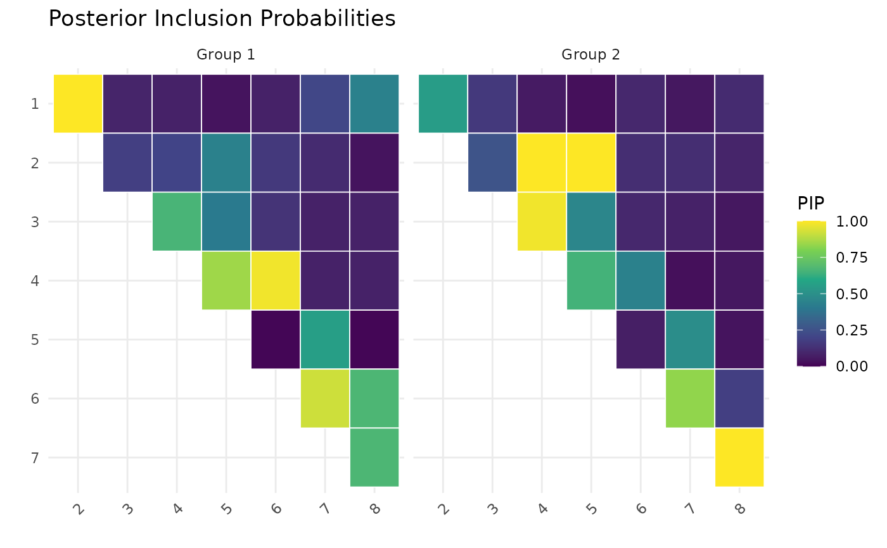

Heatmap of posterior inclusion probabilities
plot_pip_heatmap.RdCreates a heatmap of posterior inclusion probabilities (PIP) using ggplot2 with a viridis color scale. Only the upper triangle is shown.
Arguments
- pip
A numeric array of PIPs: either
[p, p](single group) or[p, p, K](multiple groups, as returned bypip_edges).- node_labels
Optional character vector of length p with node names. If
NULL, nodes are labeled 1 through p.
Examples
sim <- simulate_multiggm(K = 2, p = 8, n = 80, seed = 1)
fit <- multiggm_mcmc(data_list = sim$data_list, burnin = 200, nsave = 100)
pip <- pip_edges(fit)
plot_pip_heatmap(pip)
